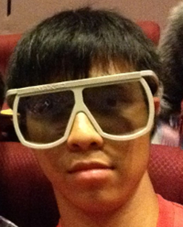
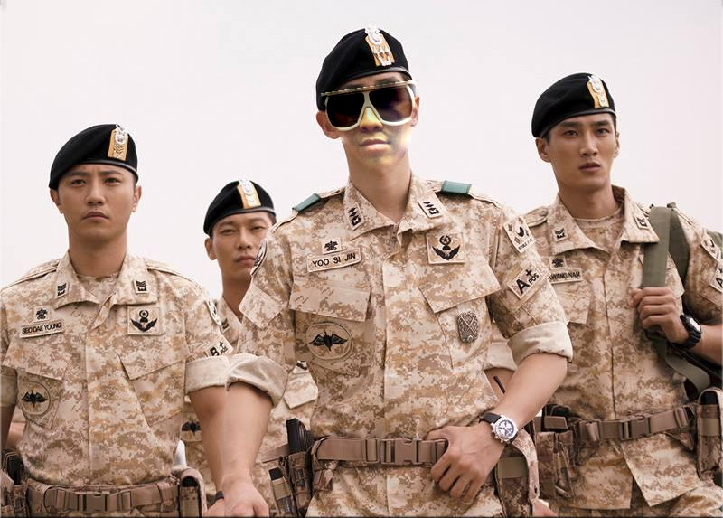
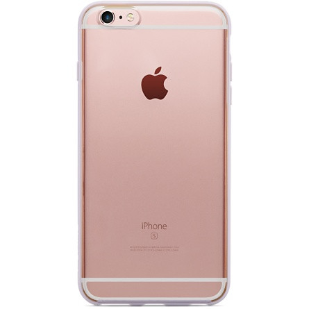
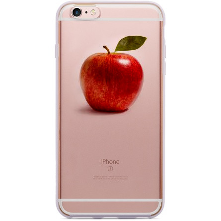
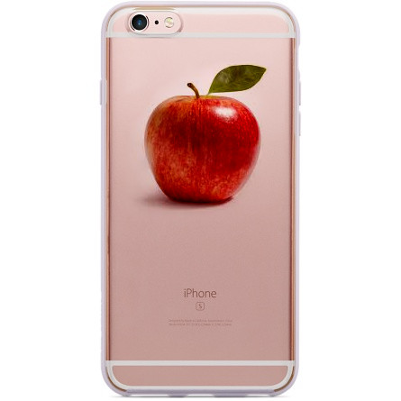

Introduction
Poisson Image Cloning is a gradient-based image cloning. It preserve the gradient of the image while cloning the color from the boundary to interior. Unfortunately, it has to solve a large sparse linear system, poisson equation, thus it consume a lot of time.
Difference between MVC and poisson Image Cloning
Optimization
Instead of directly solving a large sparse linear system, we can first sample down the target image, solve these small linear system, and then scale up the image.
Results
#1
 #2
 

#3